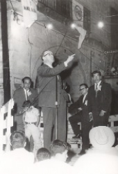

Don Miguel Estrada Iturbide
Por: Rafael Estrada Sámano
Nació Don Miguel Estrada Iturbide en la Ciudad de Morelia, Michoacán, el 17 de noviembre del 1908, hijo primogénito del matrimonio formado por Don Miguel Estrada Ramírez y Doña Ana María Iturbide Chávez, ambos oriundos de la misma ciudad y miembros de familias establecidas desde muy antiguo en la provincia de Michoacán.
Entre los ascendentes y parientes de Don Miguel habría varios dignos de mención. Baste con recordar a algunos de ellos: Don Jacobo Ramírez, su bisabuelo paterno, fue Rector del ilustre y Nacional Colegio de San Nicolás y Presidente del Supremo Tribunal de Justicia de Michoacán; el Dr. Luis Iturbide Mejía, su Bisabuelo materno, fue un apreciado médico de ideología liberal; también fueron liberales los hermanos de este último, Andrés, muerto a consecuencia de las heridas que recibió en la acción de Ixtlahuaca durante la Guerra de Reforma y Sabás, íntimo amigo del Melchor Ocampo y, como éste Diputado al Congreso Constituyente de 1856 – 1857; Don Francisco Elguero Iturbide, destacado conservador y después miembro del Partido Católico Nacional, a quien Don Miguel alcanzó a tratar de cerca, al igual que a su hijo, el conocido periodista José Elguero.
Por cierto, la rama de la familia Iturbide a la que pertenece Don Miguel es distinta de aquella a la que perteneció Don Agustín de Iturbide, sin que exista el vínculo de parentesco entre ambas, localizado en México, si bien podría quizá encontrarse en España.
En cambio, es claro que Estrada Iturbide es descendiente en línea directa de Doña Carmen Huarte, hermana de Doña Ana Huarte, esposa de Don Agustín y ambas hijas del acaudalado filántropo vallisoletano Don Isidro Huarte.
Los padres de Don Miguel se esmeraron en su educación; recibió además, influencia benéficas de varias personalidades de la Morelia de su niñez y primera juventud, como el ya citado Don Francisco Elguero y como el Padre Avella, director del Colegio Cristóbal Colón en el que el joven Estrada Iturbide hizo sus primeros estudios con gran aprovechamiento.
Posteriormente cursó la Preparatoria y los estudios de la carrera de abogado en la Escuela Libre de Michoacán. Prácticamente al concluir éstos últimos, dicha Escuela fue arbitrariamente clausurada por decreto del entonces Gobernador de Michoacán, Gral. Lázaro Cárdenas, por lo que Estrada Iturbide y sus compañeros del quinto año tuvieron que acudir a otras universidades de provincia para presentar en ellas los exámenes de la carrera a título de suficiencia y recibirse en ellas. Don Miguel encontró asilo en la Universidad de Guanajuato donde finalmente obtuvo el título de abogado en el año de 1932.
Sin embargo, su lucha para poder ejercer esa profesión en su estado natal no había concluido, pues el Supremo Tribunal de Justicia se negó a registrar su título. Contra esa determinación del tribunal, sin duda inspirada en las ideas facciosas por entonces en boga, el joven abogado Estrada Iturbide interpuso un amparo, juicio constitucional que finalmente ganó en la Suprema Corte de Justicia de la Nación, con lo que pudo iniciar el ejercicio de su profesión en el Despacho del Maestro Lic. Don José Guadalupe Soto en Morelia. Desde entonces daba así muestras de la combatividad que lo caracterizaría más adelante en su vida profesional y política.
Aún antes de recibirse, en 1926, Don Miguel había perdido a su padre, quien falleció prematuramente y en pleno proceso de consolidación de su situación familiar y económica. Esto hizo que Estrada Iturbide se uniera estrechamente a su madre y colaborara con ella, por lo que desde entonces, a muy temprana edad, tuvo que afrontar responsabilidades que sin duda hubieran sido atendidas por su padre, de no haber fallecido.
Entre los años 1926 y 1932 sostuvo Don Miguel un largo noviazgo con la que sería su esposa Srita. María Teresa Sámano Macouzet, también moreliana de pura cepa. Contrajeron matrimonio el 8 de septiembre de 1932, en Morelia. Recientemente celebraron el sexagésimo segundo aniversario de la unión completa y ejemplar, rodeados de sus ocho hijos, sus veinticinco nietos y sus tres bisnietos.
Estrada Iturbide perteneció en los primeros años treintas a la Unión Nacional de Estudiantes Católicos (U. N. E. C.), organización en la que el y muchos miembros de su generación tuvieron la oportunidad de completar una solidad formación, inspirada en las ideas más avanzadas de la doctrina social católica. Dirigida primero por Don Ramón Martínez Silva, S. J y después, brevemente, por el Dr. Jaime Castiello Fernández del Valle, S. R.., la U. N. E. C. dejo en Don Miguel, como en tantos otros, una huella imborrable; le dejo también amistades profundas como las que finco y ha cultivado desde entonces, por mencionar sólo a unos cuantos, varios de ellos ya desaparecidos, con Manuel Ulloa Ortiz, Juan Landerreche Obregón, Luis Calderón Vega, Jesús Hernández Díaz, Antonio Gómez Robledo, Javier Guzmán Rangel, Felipe Gómez Mont y Julio Chávez Montes. Además como la U. N. E. C. apoyó la lucha que en 1933 – 1934 libró denotadamente el ilustre Rector Manuel Gómez Mont por la autonomía de la Universidad Nacional, Estrada Iturbide pudo tener por entonces su primer encuentro con Gómez Morín. Dejemos que sea el propio Don Miguel quien nos lo relate como lo hizo en 1972:
“Si, conocí a Gómez Morín en la Rectoría de la Universidad. No lo conocí en su despacho profesional; … lo conocí al timón de la nave universitaria, en el momento más rudo de la tempestad. Y basto ese encuentro, de unos minutos, para que en él se iniciara una relación que no ha terminado todavía, que no terminara jamás, porque yo creo, como creía el, en la supervivencia del espíritu y sé que volveremos a encontrarnos… Recuerdo concretamente a Manuel Pacheco que me digo sencillamente: “¿No quieres venir a ver a Gómez Morín?” conteste inmediatamente que si. Y así fue el inicio de una de esas grandes amistades que dan sentido y valor a la vida”.
En otro lugar, el propio Estrada Iturbide relata que:
“Cuando, pocos años después un grupo de amigos muy queridos de la época estudiantil Manuel Ulloa, Julio Chávez, Juan José Páramo y un maestro dignísimo, Don Guilebaldo Murillo, vendrían a invitarnos a participar en la fundación de Acción Nacional, hubimos que aceptar, a pesar de iniciales resistencias, y sin duda fue factor determinante de la aceptación, el hecho de que el Comité Organizador del Partido estaba encabezado por Don Miguel Gómez Morín; era la garantía de la seriedad de la empresa y de la limpieza de propósito. No se trataba, así, de ir tras un caudillo, tras un “político”, tras un líder cualquiera, sino de acompañar al universitario ejemplar y poblado, al hombre cuya ejecutoria intelectual y moral está bien conocida y que nos llamaba para agruparnos no en torno de su persona, sino de un grupo doctrinal sólido, valedero en sí mismo y con clara orientación hacia la realidad de México. Esta aceptación marco nuevos rumbos a la propia vida y es motivo muy grande de nuestro reconocimiento imperecedero”.
Con estas convicciones abrazó Don Miguel la causa de Acción Nacional. A pesar de su juventud, pocos menos de treinta y un años, figuró y tuvo un papel destacado en la Asamblea Constitutiva del P. A. N. que se reunió en la Ciudad de México los días del 14 al 17 de septiembre de mil novecientos treinta y nueve, como miembro de la Comisión de Doctrina que presidió Don Efraín González Luna y que integraron Don Rafael Preciado Hernández, el ingeniero Agustín Aragón, el Licenciado Samuel Melo y Ostos, el Licenciado Luis Garay y el Licenciado Carlos Ramírez Zetina.-
Posteriormente tuvo también participación en las primeras Convenciones de Acción Nacional y en los Debates memorables que en ellas se Produjeron.
Dentro de un ciclo de conferencias organizado por su partido en el Frontón México de la Ciudad de México en 1943, Estrada Iturbide tildó al régimen de Ávila Camacho, por su medrosa Indefinición, de no ser rojo ni blanco, “sino que se diluye en un tímido color de rosa”, lo que valió que un agente del Ministerio Público Federal lo fuera a interrogar e intimidar hasta su natal Morelia, con la consiguiente confrontación con el Procurador General Licenciado Aguilar y Maya, de la cual salió bien librado.
Después de organizar al P. A. N. en Michoacán, Don Miguel presidió el Comité Regional de Acción Nacional en ese estado durante diecisiete años, con logros que le produjeron un legítimo orgullo y una gran satisfacción: el primer diputado federal del P. A. N. fue Don Miguel Ramírez Munguía, por el distrito de Tacámbaro Mich., en 1946; ese mismo año, Acción Nacional obtuvo su primer triunfo a nivel nacional, en el municipio, pues la planilla encabezada por Manuel Torres Serranía tomó posesión del Ayuntamiento de Quiroga, Micho.; finalmente, en 1947 el P. A. N. Acreditó, por primera vez en su historia, un diputado en una legislatura local, el Dr. Alfonso Hernández Sánchez por el Distrito de Zamora Mich.
¡Estos logros, estos avances, obtenidos en el feudo cardenista!
Durante muchos años, con la” terquedad de un demócrata convencido que sabe que mientras le dure la vida tiene que pelear por la libertad política de México” como haría notar en el Colegio Electoral de 1964; cuando, finalmente, después de cuatro candidaturas, pudo abordar la tribuna de la Cámara de Diputados, Estrada Iturbide se presentó, una y otra vez, como candidato de su Partido en diversos puestos de elección popular. Sufrió, en carne propia y en la de sus compañeros de partido, fraudes electorales, a veces descomunales como el que se produjo en Morelia, en la elección federal de 1952, cuando fue candidato a Diputado Federal José Manuel Caballero, Incomprensiones y hasta Vejaciones y persecuciones, solapadas o abiertas. A todo esto respondió redoblando esfuerzos, fortaleciendo la organización, convenciendo gentes, alentando a los desilusionados.
En 1963, fue oficialmente postulado como precandidato presidencial del P. A. N. por la Convención Regional de Guanajuato; ya antes en 1958, su nombre se había mencionado para la misma nominación. Participó extensa, entusiasta y alegremente, con el optimismo que supo poner en sus afanes, en las campañas presidenciales de Efraín González Luna (1962), Luis H. Alvarez (1958), José González Torres (1964) y Efraín González Morfín (1970). Fue miembro del Consejo Nacional de Acción Nacional desde su fundación hasta 1979 en que, sin renunciar, dirigió una carta entonces Presidente del C. E. N. del Partido, Lic., Abel Vicencio Tovar, para declarar en suspenso sus funciones y actividades como miembro de dicho Consejo Nacional.
Después de que en 1961 y en 1962 representó dignamente a su Partido en dos reuniones internacionales de partidos políticos que tuvieron lugar en Bogotá, Colombia y en Santiago de Chile, llegó y finalmente a la Cámara de Diputados en 1954 como uno de los primeros dieciocho diputados del partido acreditados por Acción Nacional. De su actuación en esa brillante XLVI Legislatura mucho es lo que podría decirse. Como era de esperarse, dada la solidez de su formación y sus indiscutibles dotes oratorias por todos reconocidas, se revelo como un parlamentario de alta costura y como un legislador estudioso y eficaz. Son Memorables sus intervenciones en el Colegio Electoral de 1964 había estado ausente en la estupenda batería de oradores que el P. A. N. presentó en el histórico Colegio Electoral de 1946, porque la directiva de ese colegio no le permitió hablar, en el debate relativo a la reelección de los Diputados y Senadores, en el que “apabullo” a Vicente Lombardo Toledano, según cabeceó “Excélsior”; en el debate relativo a la derogación del delito de disolución social; en los debates de los presupuestos federales y las cuentas públicas en uno más relacionado con el problema educativo y en muchos otros. Merced a la sagacidad política de Adolfo Christlieb Ibarrola, Jefe Nacional del P. A. N. y Coordinador de esta diputación de 1964 a 1967, Estada Iturbide, como primer Vicepresidente de la Cámara de Diputados y en su ausencia del Presidente, el 30 de septiembre de 1965 presidió la sesión solemne en que se rindió homenaje a José María Morelos en el segundo centenario de su natalicio. Al abrir la sesión el Diputado Estrada Iturbide Sorprendió a todos los presentes (con excepción de Christlieb) con una finísima pieza oratoria, llena de conceptos y de definiciones y precisiones acerca de la historia nacional, perfectamente estructurada y elocuentemente expresas que le fue aplaudida por todos los diputados puestos de pie. Es lamentable, sin embargo, que dadas las absurdas limitaciones constitucionales y políticas imperantes, un parlamentario tan destacado haya estado en el Poder Legislativo solamente durante una legislatura en la que sólo hubo tres periodos ordinarios de sesiones de cuatro meses cada uno. Con todo, ahí queda su actuación no únicamente en la tribuna, sino también en Comisiones y en los necesarios y frecuentes encuentros y entrevistas con los adversarios políticos de quienes obtuvo un evidente respeto a la par de no pocos logros políticos legislativos.
Pero Estrada Iturbide ha sido un hombre polifacético y versátil. No sólo puede vérsele como político, pensador, orador, dirigente. Ha sido también abogado postulante y, acaso por herencia de su padre, banquero probo y destacado. Promotor de sociedades intermedias y empresas culturales, Amigo estimado por muchas personas, de muy diversas procedencias e ideologías. Cristiano a carta cabal al final de un bello discurso pronunciado en 1972 en homenajes a Manuel Gómez Morín, a raíz del fallecimiento del maestro, expresó emocionado: “Quedábamos con la conmovida, imperecedera memoria de su presencia, ahí junto a su cruz, que queda junto a tantas otras, de las que sólo por ser, esta ocasión la que es, quiero mencionar la de su generoso sucesor en la jefatura del partido, que se fue antes de tiempo, Juan Gutiérrez Lascurain, muerto trágicamente en plena madurez; y la de otro sucesor, nuestro malogrado, inolvidable amigo, Adolfo Christlieb. Se fueron antes de tiempo para el tiempo para el tiempo humano. Una más: la cruz gemela, en la profundidad del afecto y en la perennidad del recuerdo, la de Don Efraín. Y qué más puedo decir, y que más puedo desear, y que más puedo pedir, que la propia cruz quede algún día junto a la de ellos”.